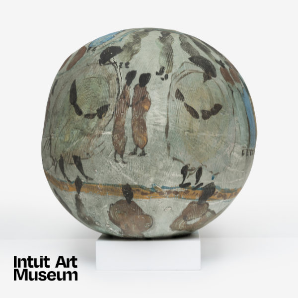

Art After Work: IAM crafting
Mold and decorate ceramics that tell a story with IAM educator Nyah, inspired by Catalyst artist Marva Lee Pitchford-Jolly. No experience needed.
Join us to make something personal and learn more about Catalyst: Im/migration and Self-taught Art in Chicago.
Free with museum admission and for members.